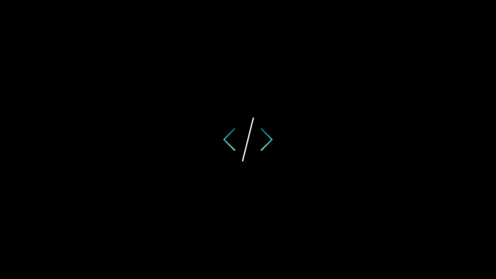
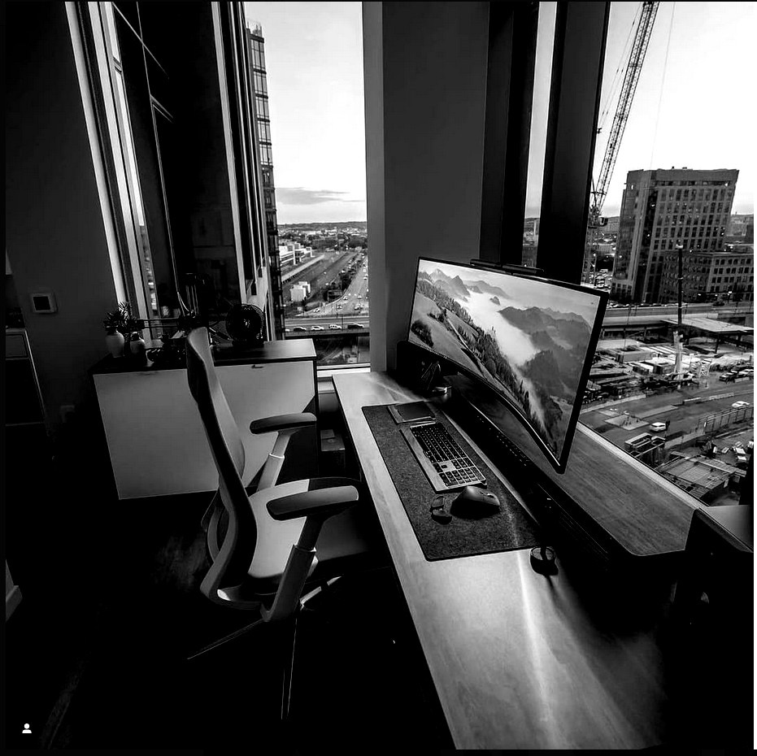
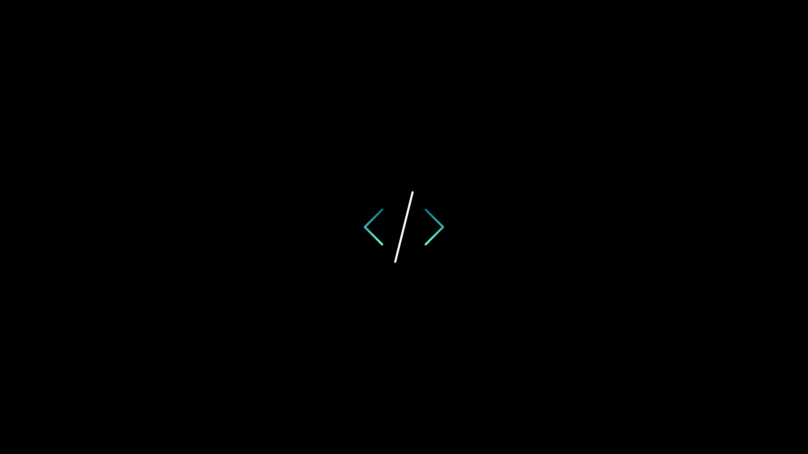
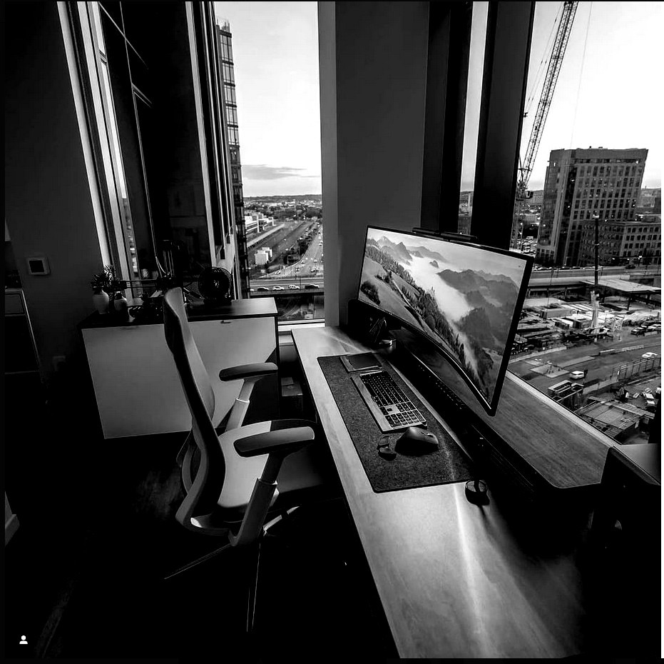

Welcome to our Advanced Level Information Communication Skills Development Course. This course is meticulously designed to equip students with vital skills and knowledge that are pivotal in the ever-evolving digital landscape. Throughout this program, you'll dive into the fundamentals of information technology, covering key areas such as computer systems, software applications, digital communications, and web technologies. Emphasizing both theoretical understanding and practical application, the course ensures a comprehensive learning experience. Our curriculum is tailored to foster proficiency in a range of ICT tools and platforms, setting a strong foundation for students aspiring to careers in technology or related fields. From mastering basic computer operations to exploring complex concepts like database management and network security, this course offers a diverse learning journey. You will also engage in project-based assignments and case studies that simulate real-world challenges, honing your problem-solving and critical thinking skills. Moreover, we emphasize the development of effective communication skills, both in digital and traditional formats, understanding their significance in professional and academic settings. As digital literacy becomes increasingly indispensable, our course aims to prepare students not just for their upcoming exams but also for a future where technology plays a central role in all aspects of life. Whether you aim to pursue higher education in ICT or jumpstart a career in the tech industry, this course is your gateway to understanding and leveraging the power of information and communication technologies.
| subjects | hours |
|---|---|
| interduce ict | 10 |
| fondamental of ict | 10 |
| gates | 10 |
| number system | 10 |
| operating system | 10 |
| network management | 30 |
| database management | 50 |
| programming environment | 50 |
| web development | 40 |
| internet of technologies | 4 |
| Agent management | 3 |
| programming project-based | 30 |

 


